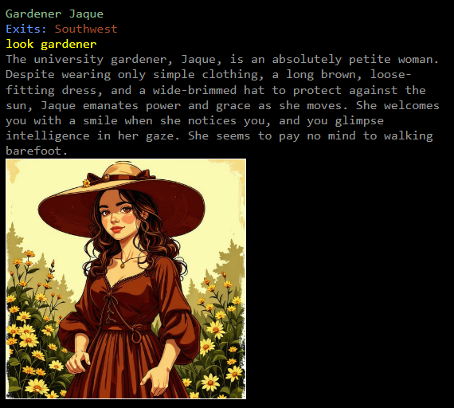

There's an assortment of information on various technologies I've experienced,
which is likely to be on your left. I hope you find something of value while here!
Also home to - A
text-based, rouge-like, mud and virtual
world. (Someday! It's early in
development.)
Definitions:
text-based
You must read.
rouge-like
You get one life and need to be careful.
mud
A "multi-user dungeon" - An old-school text-based game. The
"OG"multiplayer
game.
virtual world
In addition to being a game, every NPC will be AI-controlled with unique knowledge,
experiences, motivations, and they're remember and continue conversations. Want to
know
when to plant sunflowers? Ask the gardener:

/say "when's the best time to plant sunflowers?"
Ah, sunflowers! They're a classic summertime favorite, aren't
they?
Around here, the best time to get those big, beautiful blooms going is usually
mid-May. We want to make sure the last frost has passed. Once the ground's
warmed up
a bit, those little sunflower seeds will pop right out.
But hey, every yard's a little different. If you're worried about a late frost,
you
might want to wait until June. Just keep an eye on the weather!